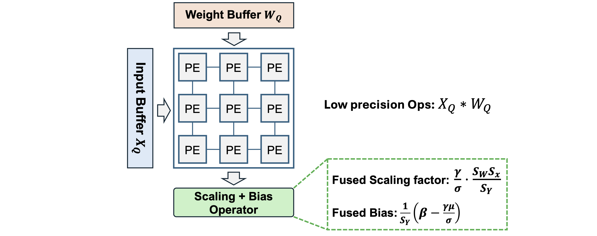

T2C Core Modules
Vanilla4Compress [Source]
The pre-trained model from PyTorch, timm, and HuggingFace are mainly constructed by the vanilla torch.nn layers. To enable the quantization with Torch2Chip, quantizers and pruning masks should be properly assigned. As a result, converting the vanilla layers into T2C-compatible layers is critical for successful compression.
Convert the vanilla PyTorch layer (E.g., torch.nn.Conv2d) into T2C layers (E.g., QBaseConv2d). Layer conversion is the starting point of all the subsequent compression (pruning and quantization).
class Vanilla4Compress(object):
def __init__(self, model:nn.Module, wbit:int=8, abit:int=8, state_dict:Dict=None) -> None:
self.model = model
self.wbit = wbit
self.abit = abit
self.state_dict = state_dict
Attributes:
model: Vanilla pre-trained modeltorch.nn.Module.wbit: Weight precision (int)abit: Activation precision (int)state_dict: State dict of the pre-trained model (e.g., quantized, pre-trained), the pre-trained model state dict serves as the reference model dictionary to reshape the quantization parameters.
Methods:
convert(self): Convert the entire vanilla model by Iterating over the model and convert the vanilla modules into T2C modules.conv(self, layer:torch.nn.Conv2d): Convert the vanillaConv2dlayer to the T2C compatibile_QBaseConv2d. Copy the pre-trained full-precision weights and bias to the newly-initiated layer.linear(self, layer:torch.nn.Linear): Convert the vanillaLinearlayer to the T2C compatibile_QBaseLinear. Copy the pre-trained full-precision weights and bias to the newly-initiated layer.mlp(self, layer:Mlp): Convert all theLinearlayer of the vanillatimm.layers.Mlpinto the T2C compatibile_QBaseLinear.-
attn(self, layer:Attention): Convert the vanillatimmAttention module (Attention) into the T2C compatibleQAttentionmodule, which further enable the low precision Q, K, V, and attention via quantization. -
wattn(self, layer:WindowAttention): Convert the vanillatimmWindow Attention module (WindowAttention) into the T2C compatibleQWindowAttentionmodule, which further enable the low precision Q, K, V, and attention via quantization. assign_quantizer(self, wqtype, xqtype): Assign quantizer to the converted layers based on the type of weight quantizer (wqtype) and activation quantizer (xqtype).reshape_quantizer: Reshape the quantization parameters with the given quantizers (weight and activation). Since
Example Usage: Convert the pre-trained model and prepare for quantization / pruning
from torchvision.models import resnet50, ResNet50_Weights
# Pre-trained ResNet-50 model from PyTorch
model = resnet50(weights=ResNet50_Weights.IMAGENET1K_V1)
# Vanilla to T2C-compatible layer
converter = Vanilla4Compress(model, wbit=args.wbit, abit=args.abit)
model = converter.convert()
Vanilla ResNet Bottleneck block before conversion:
(0): Bottleneck(
(conv1): Conv2d(1024, 512, kernel_size=(1, 1), stride=(1, 1), bias=False)
(bn1): BatchNorm2d(512, eps=1e-05, momentum=0.1, affine=True, track_running_stats=True)
...
)
Converted ResNet Bottleneck block after conversion:
(0): Bottleneck(
(conv1): _QBaseConv2d(
1024, 512, kernel_size=(1, 1), stride=(1, 1), bias=False
(wq): _QBase(
nbit=8
(observer): BaseObserver()
)
(aq): _QBase(
nbit=8
(observer): BaseObserver()
)
(yq): _QBase(
nbit=8
(observer): BaseObserver()
)
)
(bn1): BatchNorm2d(512, eps=1e-05, momentum=0.1, affine=True, track_running_stats=True)
...
)
By default, the _QBase module act like a placeholder module with no quantization methods activated. The user-selected quantizaters will be assigned in the PTQ Trainer. For more details about the post-training quantization module, please refer to the Tutorial section.
Example Usage: Reload the fake-quantized model
# Define a pre-trained model (full-precision)
model = resnet50(weights=ResNet50_Weights.IMAGENET1K_V1)
wrapper = Vanilla4Compress
# Load a fully quantized model
logger.info("=> loading checkpoint...")
state_tmp = load_checkpoint(ckpt=args.resume, state=model.state_dict())
# reload_fake_quant: convert the model and assign quantizers
converter = wrapper(model, wbit=args.wbit, abit=args.abit, state_dict=state_tmp)
model = converter.reload_fake_quant(wqtype=args.wqtype, xqtype=args.xqtype)
# load the pre-trained checkpoint (fake-quantized model)
model.load_state_dict(state_tmp)
Vanilla ResNet Bottleneck block before conversion:
(0): Bottleneck(
(conv1): Conv2d(1024, 512, kernel_size=(1, 1), stride=(1, 1), bias=False)
(bn1): BatchNorm2d(512, eps=1e-05, momentum=0.1, affine=True, track_running_stats=True)
...
)
After converting the vanilla layer and assign the weight and activation quantizers (fake-quantization version) with QDrop and MinMaxChannelWiseWeightQuantizer:
(0): Bottleneck(
(conv1): _QBaseConv2d(
1024, 512, kernel_size=(1, 1), stride=(1, 1), bias=False
(wq): MinMaxChannelWiseWeightQuantizer(
nbit=8
(observer): MinMaxChannelWiseWeightObserver()
)
(aq): QDrop(
nbit=8, delta=1.00e+00
(observer): LSQObserver()
)
(yq): _QBase(
nbit=8
(observer): BaseObserver()
)
)
(bn1): BatchNorm2d(512, eps=1e-05, momentum=0.1, affine=True, track_running_stats=True)
...
)
The conversion between the vanilla layer (torch.nn) and the T2C layer is required for conversion and post-compression conversion.
ViTV4C [Source]
Vanilla to T2C model conversion designed for vision transformer (ViT) models, compatible for both swin transformer and conventional ViT model architecture, inherited from Vanilla4Compress.
class ViTV4C(Vanilla4Compress):
def __init__(self, model: nn.Module, wbit: int = 8, abit: int = 8, state_dict:Dict = None) -> None:
super().__init__(model, wbit, abit, state_dict)
Attributes:
model: Vanilla pre-trained vision transformer model (torch.nn.Module).wbit: Weight precision (int)abit: Activation precision (int)state_dict: State dict of the pre-trained model (e.g., quantized, pre-trained), the pre-trained model state dict serves as the reference model dictionary to reshape the quantization parameters.
Methods:
reshape_quantizer: Reshape the quantization parameters based on the reference parameter dictionary (self.state_dict).assign_quantizer: Assign quantizers to Attention and MLP modules of the transformer model.
BERT4Compress [Source]
Vanilla to T2C model conversion for BERT model, inherited from Vanilla4Compress.
class BERT4Compress(Vanilla4Compress):
def __init__(self, model: nn.Module, wbit: int = 8, abit: int = 8, state_dict: Dict = None) -> None:
super().__init__(model, wbit, abit, state_dict)
self.config = self.model.config
Attributes:
model: Vanilla pre-trained BERT model (torch.nn.Module), must be a HuggingFace pre-trained checkpoint.wbit: Weight precision (int)abit: Activation precision (int)state_dict: State dict of the pre-trained model (e.g., quantized, pre-trained), the pre-trained model state dict serves as the reference model dictionary to reshape the quantization parameters.
Methods:
bert_attn(self, layer:BertSelfAttention): Convert the vanilla BERT Self-Attention module into T2C "compressable" attention module.bert_output(self, layer:BertSelfOutput): Convert the fully connected layer of the vanilla BERT output MLP block into T2C "compressable" linear layer_QBaseLinear.
T2C [Source]
Applies post-compression (e.g., Post-training quantization) conversion with a given fake-compressed model.
class T2C(object):
def __init__(self, model:nn.Module, swl:int, sfl:int, args):
self.swl = swl
self.sfl = sfl
self.args = args
self.swl = swl
self.sfl = sfl
self.args = args
# model fusion
fuser = FUSERS[str(args.model)](model)
# switch to inference mode
fuser.inference()
# fuse layers
fused_model = fuser.fuse()
self.model = fused_model
T2C module converts a pre-trained fake-quantized model into a hardware-deployable model with low precision only operation.
Attributes:
model: Pre-trained fake-quantized model.swl: Total bitwidth of the fused scaling factor.sfl: Fractional bitwidth of the fused scaling factor.args: Argument holder (Argparse)sparsity: Weight sparsity.
Methods:
compute_sparsity: Compute the weight sparsity of the given modelself.model.scale_bias2int: Convert the floating point scaling factor (fused quantization + normalization) and bias into fixed point integer, with the total bitwidthself.swland fractional bitwidthself.sfl.fused_model: Return the converted model with low precision-only operations and fixed-point integer scaling factor and bias.export: Export the converted model by fetching and saving the intermediate operator (ops) results (input and output).bert_export: Export the converted BERT model by fetching and saving the intermediate operator (ops) results (input and output).
Example Usage
# Step 1. Define the model architecture
model = vit_small_patch16_224(pretrained=True)
wrapper = ViTV4C
# Step 2. Reconfigure the fake-quantization quantizers
converter = wrapper(model, wbit=args.wbit, abit=args.abit, state_dict=state_tmp)
model = converter.reload_fake_quant(wqtype=args.wqtype, xqtype=args.xqtype)
# Step 3. Load the pre-trained checkpoint
state_tmp = load_checkpoint(ckpt=args.resume, state=model.state_dict())
model.load_state_dict(state_tmp)
After defining the model architecture and reload the quantizers, the quantizers (in the fake-quantization mode) are properly inserted into the model:
(attn): QAttention(
(qkv): _QBaseLinear(
in_features=384, out_features=1152, bias=True
(wq): AdaRound(
nbit=8
(observer): AdaRoundObserver()
)
(aq): _QBase(
nbit=8
(observer): BaseObserver()
)
(q_norm): Identity()
(k_norm): Identity()
(attn_drop): Dropout(p=0.0, inplace=False)
(proj): _QBaseLinear(
in_features=384, out_features=384, bias=True
(wq): AdaRound(
nbit=8
(observer): AdaRoundObserver()
)
(aq): _QBase(
nbit=8
(observer): BaseObserver()
)
)
(proj_drop): Dropout(p=0.0, inplace=False)
(qkv_scale): MulShift()
(qkv_deq): MulShift()
(attn_scale): MulShift()
(xq): LSQTokenWise(
nbit=8, delta_mean=6.12e-02
(observer): LSQTokenWiseObserver()
)
(qqkv): LSQTokenWise(
nbit=8, delta_mean=8.10e-02
(observer): LSQTokenWiseObserver()
)
(qproj): LSQTokenWise(
nbit=8, delta_mean=3.87e-02
(observer): LSQTokenWiseObserver()
)
)
By converting the model via T2C, the computation of the forward pass will be executed through the evaluation branch (evalFunc) with low-precision only operations (ops). The quantization and dequantization scaling are fused into the MulShift and MulQuant modules (see below for more details).
# Step 4. T2C
t2c = T2C(model=model, swl=args.swl, sfl=args.sfl, args=args)
qmodel = t2c.fused_model()
After the T2C conversion:
(attn): QAttention(
(qkv): _QBaseLinear(
in_features=384, out_features=1152, bias=True
(wq): AdaRound(
nbit=8
(observer): AdaRoundObserver()
)
(aq): _QBase(
nbit=8
(observer): BaseObserver()
)
(ops): IntMatMul()
)
(q_norm): Identity()
(k_norm): Identity()
(attn_drop): Dropout(p=0.0, inplace=False)
(proj): _QBaseLinear(
in_features=384, out_features=384, bias=True
(wq): AdaRound(
nbit=8
(observer): AdaRoundObserver()
)
(aq): _QBase(
nbit=8
(observer): BaseObserver()
)
(ops): IntMatMul()
)
(proj_drop): Dropout(p=0.0, inplace=False)
(qkv_scale): MulShift()
(qkv_deq): MulShift()
(attn_scale): MulShift()
(xq): LSQTokenWise(
nbit=8, delta_mean=4.63e-02
(observer): LSQTokenWiseObserver()
)
(qqkv): MulQuant()
(qproj): MulQuant()
(qk): IntMatMul()
(attnv): IntMatMul()
)
The model conversion and fusion process of T2C aims to isolate the bottom-level basic operators (e.g., MatMul) on the top level, so the observability of the operation can be ensured for hardware design and verification.
As shown in the example of QAttention above, all the matrix multiplication operations (Fully-connected layer, Query x Key, etc) has been isolated into the matrix multiplication operator IntMatMul.
In the meantime, the quantizers (qqkv, qproj) are converted into the MulQuant module, which collectively performs dequantization + quantization. In hardware implementation, the MulQuant operator corresponds to the scaling + rounding operator.
Fuser
Layer fusers are critical to convert the fake-quantized computation into the actual quantized operation. More importantly, the basic operator of each type of layer(e.g., MatMul in torch.nn.Linear) is isolated on the top level. As a result, the T2C module can fetch and extract the intermediate input and output for hardware verification with actual low-precision tensors.
LayerFuser [Source]
Fuse the layers between conv, quantizer, and batchnorm, the base class for all the other model-specific fusers.
Attributes / Methods:
model: DNN model with T2C layers.inference(self): Switch the model to the inference mode.
Fusion between Conv, BN, and ReLU
Given a sequence of Conv, BatchNorm, and ReLU layers, the dequantization and the normalization layer can be fused as a channel-wise scaling and bias adding process. Specifically, given the quantized weight \(W_Q\) and activation \(X_Q\), the final output can be characterized as: $$ Y = Round(\frac{\gamma}{\sigma}\frac{S_XS_W}{S_Y}(X_Q * W_Q) + \frac{1}{S_Y}(\beta - \frac{\gamma \mu}{\sigma})) $$ Where \(\gamma\), \(\sigma\) , \(\beta\), and \(\mu\) represents the weight, running variance, bias, and running mean of the BatchNorm module.
It is easy to tell that the low precision operation (\(X_Q *W_Q\)) is executed in the dedicated computation engine, while the post-computation scaling and bias adding are deployed to the high-precision operator. Conceptually, the overall hardware architecture can be generalized as:

Where the fused scaling factor and fused bias tensors can be quantized into fixed-point representation (scale_bias2int) with high precision representation (e.g., INT16).
QConvBNReLU [Source]
class QConvBNReLU(nn.Module):
r"""
Template of module fusion
"""
def __init__(self, in_channels:int, out_channels:int, kernel_size:int, stride:int=1,
padding:int=0, dilation:int=1, groups:int=1, bias:bool=True, wbit:int=32,
abit:int=32, train_flag=True, int_out=True):
super(QConvBNReLU, self).__init__()
# modules
self.conv = _QBaseConv2d(in_channels, out_channels, kernel_size, stride, padding, dilation, groups, bias, wbit, abit, train_flag)
self.bn = nn.BatchNorm2d(out_channels)
self.relu = nn.Identity()
# flag
self.int_out = int_out
self.scale = torch.tensor(1.0)
# precision
self.abit = abit
# scaler
self.scaler = MulShift()
For Convolutional Neural Network, the sequence of _QBaseConv2d, BatchNorm2d, and ReLU layers are collectively "fused" into the QConvBNReLU layer.
The combined scaling factor is fused into the scaler , while the convolution is perfomed with the quantized low precision tensors (weight and activation).
def forward(self, inputs:torch.Tensor) -> torch.Tensor:
x = self.conv(inputs)
x = self.scaler(x)
x = self.relu(x)
return x
MulShift [Source]
class MulShift(nn.Module):
r"""Multiply the scaling factor and add the bias
Attributes:
scale: Scaling factor with the shape of output channels.
bias: Bias value.
fl: Fractional bits of the high-precision integer.
"""
def __init__(self):
super(MulShift, self).__init__()
self.register_buffer("scale", torch.tensor(1.0))
self.register_buffer("bias", torch.tensor(0.0))
# fractional bit width
self.fl = 0.
def inference(self):
pass
def forward(self, x:torch.Tensor):
out = x.mul(self.scale).add(self.bias)
out = out.mul(2**(-self.fl))
return out
Multiply the scaling factor and adding bias of the input tensor from the previous computation step (e.g., Convolution or MatMul).
In particular, if the scaling factor and bias are quantized to the fixed point high-precision integer format, the scaled tensor will be right shifted by the number of fractional bits.
MulQuant [Source]
class MulQuant(nn.Module):
r"""Multiply the scaling factor and add the bias, then quantize the output.
Attributes:
scale: Scaling factor with the shape of output channels.
bias: Bias value.
fl: Fractional bits of the high-precision integer.
"""
def __init__(self, nbit:int=8, unsigned=False):
super(MulQuant, self).__init__()
self.register_buffer("scale", torch.tensor(1.0))
self.register_buffer("bias", torch.tensor(0.0))
self.register_buffer("zero_point", torch.tensor(0.0))
self.nbit = nbit
self.unsigned = unsigned
# upper and lower bound
if not self.unsigned:
self.qlb = -2**(self.nbit-1)
self.qub = 2**(self.nbit-1) - 1
else:
self.qlb = 0
self.qub = 2**(self.nbit) - 1
# fractional bit width
self.fl = 0.
def inference(self):
pass
def forward(self, x:torch.Tensor):
# scale
out = x.mul(self.scale)
out = out.add(self.bias).mul(2**(-self.fl)).round()
# quant
out = out.add(self.zero_point)
out = out.clamp(min=self.qlb, max=self.qub).sub(self.zero_point)
return out.clamp(min=self.qlb, max=self.qub)
Multiply the scaling factor and adding bias of the input tensor from the previous computation step (e.g., Convolution or MatMul), then round the scaled tensor to formulate the quantized low precision output.
In particular, if the scaling factor and bias are quantized to the fixed point high-precision integer format, the scaled tensor will be right shifted by the number of fractional bits.
Convolutional Neural Network
ResNet18Fuser [Source]
Apply layer-wise fusion for the ResNet-18 model. Iterating over the ResNet BasicBlock and fuse the _QBaseConv2d, BatchNorm2d, and ReLU layers. The resultant model performs the convolution of each layer with quantized tensors only (weight and activation) through the inference path (evalFunc).
ResNet34Fuser [Source]
Apply layer-wise fusion for the ResNet-34 model. Iterating over the ResNet BasicBlock and fuse the _QBaseConv2d, BatchNorm2d, and ReLU layers. The resultant model performs the convolution of each layer with quantized tensors only (weight and activation) through the inference path (evalFunc).
Note: Since the ResNet-34 and ResNet-18 shares the same basic module (BasicBlock), ResNet34Fuser and ResNet18Fuser are sharing the same fusing strategy.
ResNet50Fuser [Source]
Apply layer-wise fusion for the ResNet-50 model. Iterating over the ResNet BottleneckBlock and fuse the _QBaseConv2d, BatchNorm2d, and ReLU layers. The resultant model performs the convolution of each layer with quantized tensors only (weight and activation) through the inference path (evalFunc).
MobileNetV1Fuser [Source]
Apply layer-wise fusion for the MobileNet-V1 model. Iterating over the model and fuse the _QBaseConv2d, BatchNorm2d, and ReLU layers. For the convolutional layers, both depth-wise and point-wise layers are fused properly. The resultant model performs the convolution of each layer with quantized tensors only (weight and activation) through the inference path (evalFunc)
VGGFuser [Source]
Apply layer-wise fusion for the VGG model. Iterating over the model and fuse the _QBaseConv2d, BatchNorm2d, and ReLU layers. The resultant model performs the convolution of each layer with quantized tensors only (weight and activation) through the inference path (evalFunc).
Transformer
ViTFuser [Source]
Iterate over the VisionTransformer model and fuse the Attention and MLP modules and enable the integer-only operations.
Different from the fusion for convolutional neural networks, the post-training fusion of the transformer model ensures the low precision operations inside both MLP and Attention modules:
Attention Module:
- Low precision operation of the QKV projection
qkv(low precision weight + activation). - Low precision MatMul between Q and K.
- Low precision output of SoftMax function.
- Low precision MatMul between Attention and V.
- Low precision Projection layer.
MLP:
- Low precision MatMul operation of fully-connected layers (
fc1andfc2).
The forward pass will be executed through the evaluation path (evalFunc) of the QAttention module with integer-only MatMul operations.
SwinFuser [Source]
Model fuser for SwinTransformer. Fuse the SwinAttention and MLP modules and enable the integer-only computations. Similar to the ViTFuser, the forward pass fo the converted SwinTransformer model follows the evaluation path (evalFunc) with the following integer-only operations:
Attention Module:
- Low precision operation of the QKV projection
qkv(low precision weight + activation). - Low precision MatMul between Q and K.
- Low precision output of SoftMax function.
- Low precision MatMul between Attention and V.
- Low precision Projection layer.
MLP:
- Low precision MatMul operation of fully-connected layers (
fc1andfc2).